דרך ההייטק · לומדת רובוטיקה ומיינקראפט
מדריך מורה
אקדמיית ה-Agent
מסמך עבודה קצר וברור למורה: איך נכנסים למערכת, יוצרים כיתה, מוסיפים תלמידים, פותחים את שיעור 0, מנהלים את Minecraft ועוקבים אחרי ההתקדמות.
תמונה כללית
המורה עובדת בעיקר מתוך מסך הכיתות שלה. שם היא יוצרת כיתה, מוסיפה תלמידים, מחלקת קודי כניסה, פותחת את שיעור 0 ואת סביבת Minecraft, ועוקבת אחרי התקדמות התלמידים.
1. כניסת מורה למערכת
- נכנסים למסך המורה:
teacher-classrooms.html. - אם זו כניסה ראשונה, מממשים הזמנה חד-פעמית עם מייל וקוד הזמנה.
- לאחר קבלת הסיסמה הזמנית, נכנסים עם מייל וסיסמה.
הסיסמה הזמנית מוצגת פעם אחת בלבד. אם המורה איבדה אותה, צריך להנפיק לה הזמנה/סיסמה חדשה מתוך ניהול המערכת.
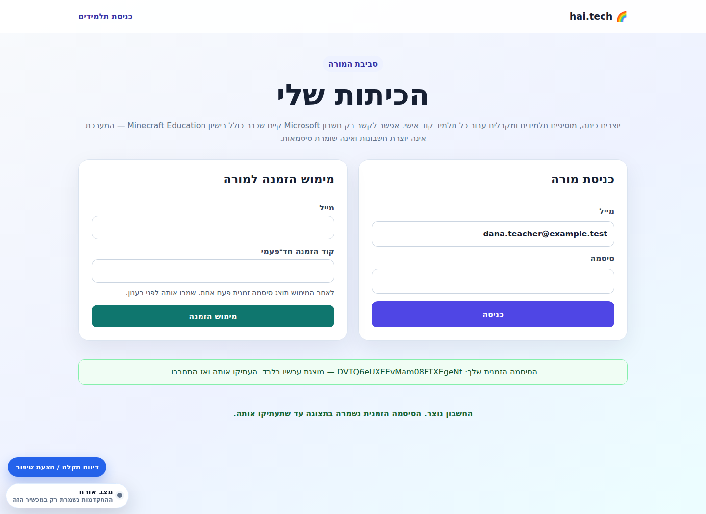
2. יצירת כיתה באקדמיית ה-Agent
- במסך המורה מזינים שם כיתה.
- מסמנים את הלומדה אקדמיית ה-Agent.
- לוחצים יצירת כיתה.
- המערכת מציגה קוד כיתה לתלמידים.
קוד הכיתה הוא הקוד המשותף לכל תלמידי הכיתה. לכל תלמיד יש בנוסף קוד אישי משלו.
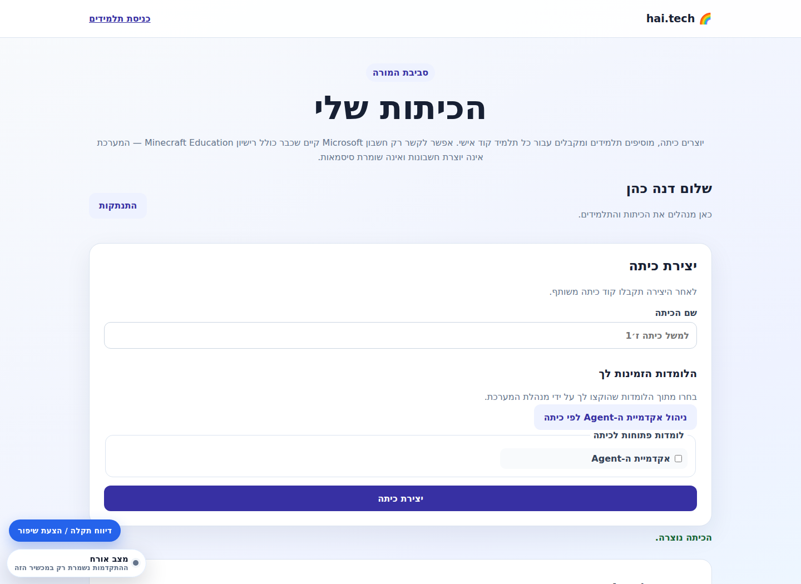
3. הוספת תלמידים וקודי כניסה
- פותחים את כרטיס הכיתה.
- מזינים שם תלמיד/ה.
- לוחצים הוספת תלמיד/ה.
- מעתיקים את הקוד האישי שנוצר לתלמיד.
קוד אישי מוצג למורה פעם אחת בלבד. אחרי זה המערכת שומרת רק hash ולא את הקוד הגלוי.
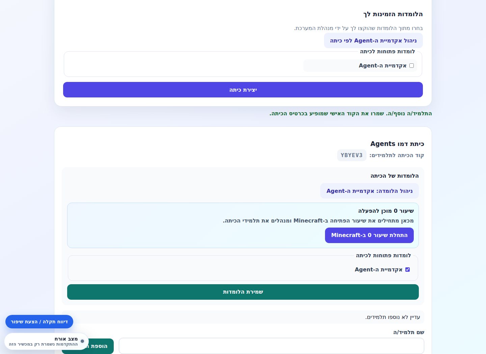
4. חיבור Minecraft לתלמיד
כדי שתלמיד יוכל לעבוד עם Minecraft Education, צריך לוודא שיש לו חשבון Microsoft/Minecraft קיים ורישיון תקין.
- בכרטיס התלמיד בודקים אם מופיע משתמש Minecraft או מייל Minecraft מאומת.
- אם צריך, מנהלת/מורה עם הרשאה מאמתת את החשבון לפי מייל ושם שחקן.
- אחרי אימות, המערכת יודעת לקשר בין התלמיד בלומדה לבין חשבון Minecraft שלו.
המערכת לא יוצרת חשבון Microsoft ולא מאפסת סיסמה לחשבון Microsoft. היא רק מאמתת חשבון קיים ומציגה את שיוך המשתמש.
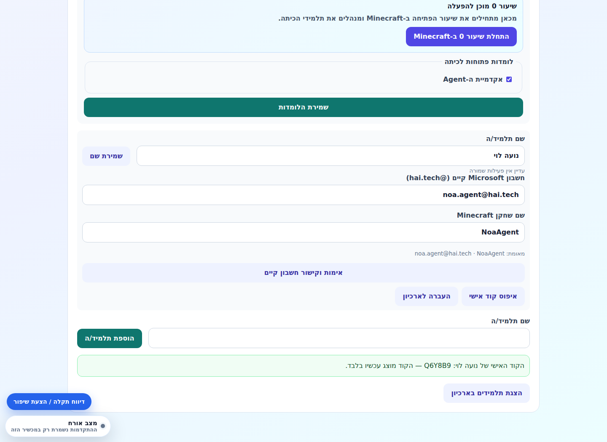
5. פתיחת שיעור 0 וניהול Minecraft
שיעור 0 הוא שיעור הכניסה לעולם Minecraft. במסך המורה אפשר להפעיל את העולם, לראות סטטוס שרת, לעקוב אחרי תלמידים, ולסיים את השיעור כדי לקבל דוח.
- בכרטיס הכיתה נכנסים לניהול אקדמיית ה-Agent.
- פותחים את שיעור 0.
- מפעילים את שרת Minecraft/עולם שיעור 0.
- מוודאים שמופיע קוד כניסה לשרת והוראות לתלמידים.
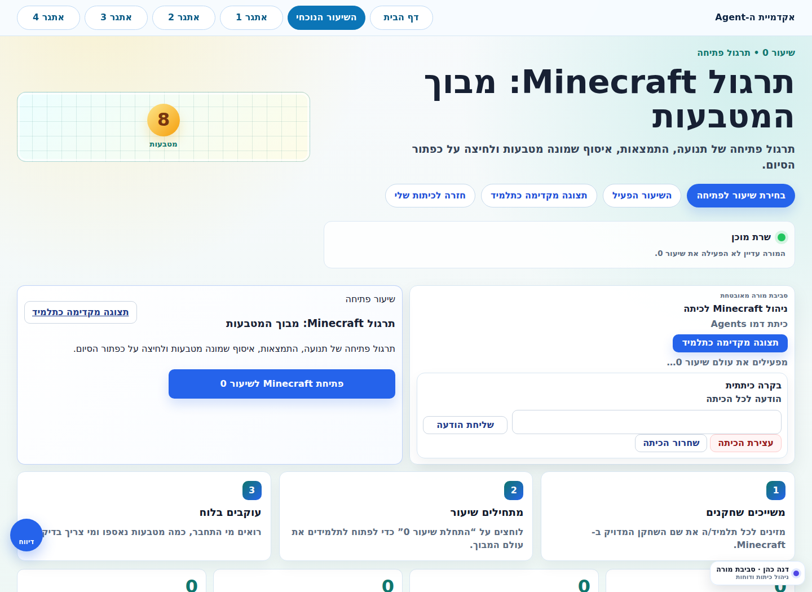
6. מה המורה אומרת לתלמידים
התלמידים נכנסים עם קוד כיתה וקוד אישי. אחרי הכניסה הם רואים את הלומדות שהוקצו לכיתה ולוחצים על אקדמיית ה-Agent.
- לתת לתלמידים את קוד הכיתה.
- לתת לכל תלמיד את הקוד האישי שלו.
- להנחות אותם לבחור באקדמיית ה-Agent.
- בשיעור 0, להנחות אותם להיכנס לעולם Minecraft לפי פרטי השרת שמופיעים אצלם.
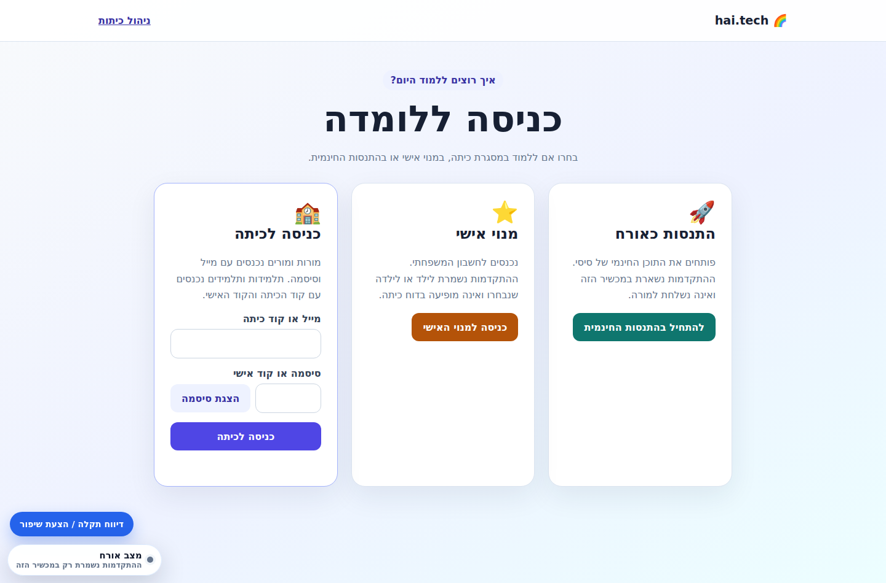
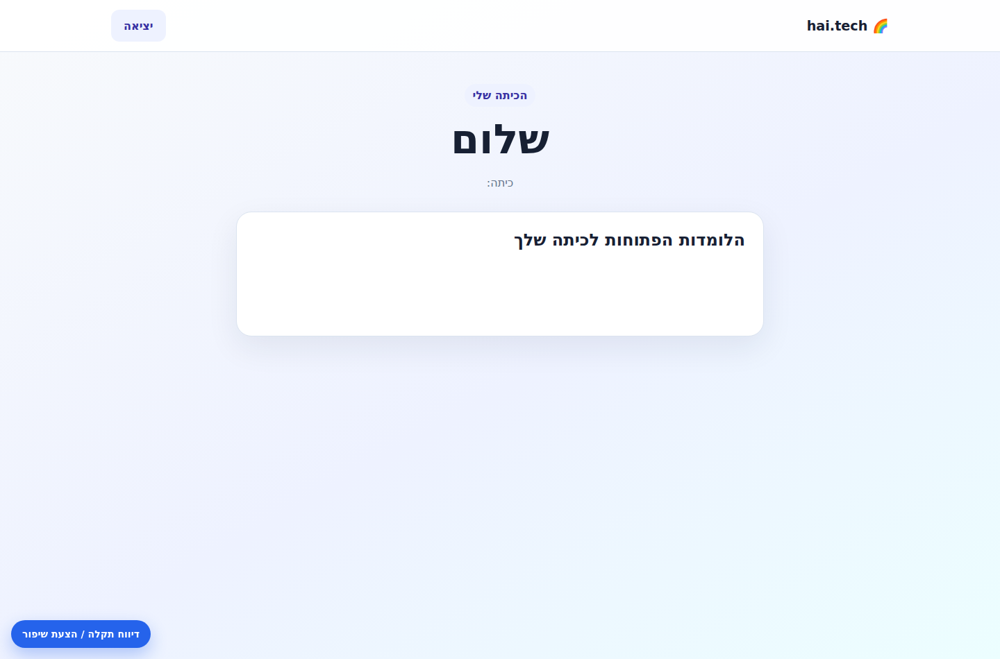
7. עבודה בתוך שיעורי Agent
אחרי שיעור 0, התלמידים עובדים לפי שיעורי Agent. בכל שיעור יש משימה, תרגול קוד, MakeCode/Minecraft וכרטיס יציאה.
- המורה בוחרת שיעור או מפנה את התלמידים לשיעור הרלוונטי.
- התלמידים קוראים את המשימה ועובדים על התרגול.
- במקומות המתאימים הם עוברים ל-Minecraft Education ומיישמים.
- בסוף מגישים כרטיס יציאה/עדות עבודה.
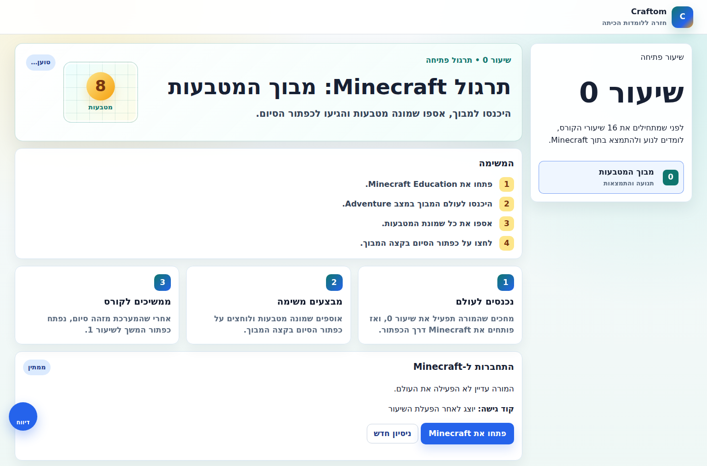
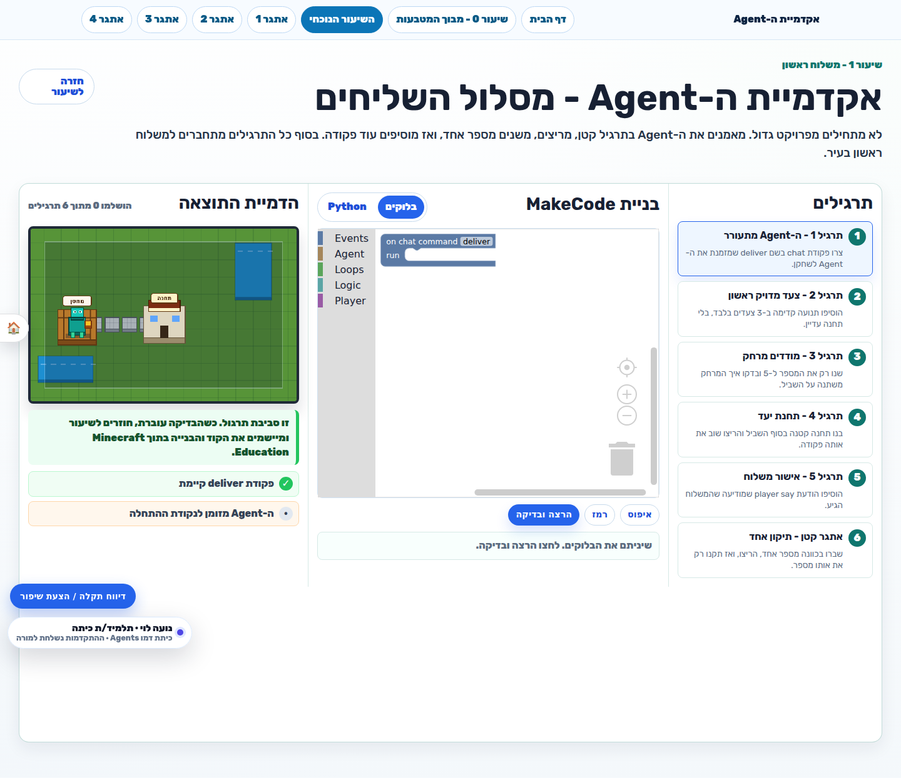
8. מעקב התקדמות ודוחות
המורה יכולה לעקוב אחרי פעילות הכיתה: מי נכנס, מי התקדם, מי השלים תרגול, ומה מצב התלמידים בשיעור.
- פותחים את כרטיס הכיתה במסך המורה.
- נכנסים לדוח/מעקב התקדמות.
- מסננים לפי שיעור אם צריך.
- פותחים תלמיד מסוים כדי לראות פירוט.
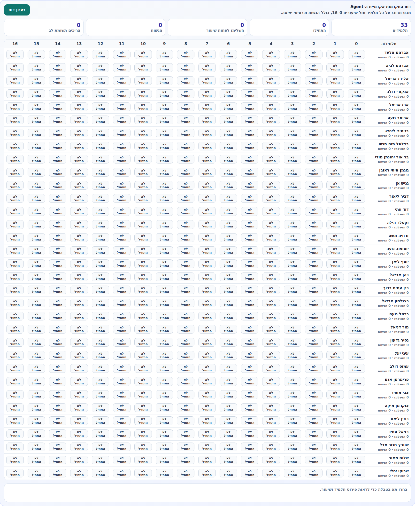
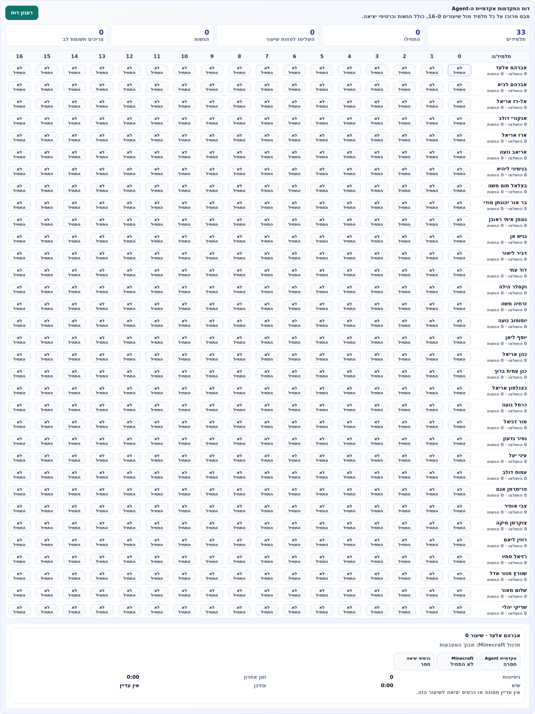
9. סיום שיעור 0 ודוח סוף שיעור
בסוף שיעור 0 המורה לוחצת על סיום שיעור. הפעולה אמורה לבקש דוח מהמוניטור, לכבות את שרת Minecraft, ולהציג דוח סוף שיעור במסך המורה.
- בודקים שהתלמידים סיימו או שהשיעור נגמר.
- לוחצים סיום שיעור 0.
- ממתינים עד שהמערכת מאשרת שהשרת ירד.
- קוראים את דוח סוף השיעור.
אם המערכת מציגה שגיאה שהשרת עדיין פעיל, לא להתעלם: צריך לבדוק מול המוניטור או לנסות סגירה מחדש. המערכת לא אמורה לסמן שיעור כסגור אם השרת עדיין למעלה.
10. הפעלת שיעור 0 מחדש
אם המורה כבר סיימה את שיעור 0 ויש דוח, אפשר להפעיל את שיעור 0 מחדש לאותה כיתה.
הכפתור הפעלת שיעור 0 מחדש עושה את הפעולות הבאות:
- מעלה מחדש את עולם Minecraft של שיעור 0.
- מאפס את נתוני הריצה הקודמת במסך שיעור 0.
- מנקה את הדוח מהמצב החי כדי להתחיל סבב חדש.
- לא פותח את שיעור 1 ולא מקדם את הכיתה לשיעור הבא.
צ'קליסט קצר למורה לפני שיעור
- נכנסתי למסך המורה.
- הכיתה קיימת ומסומנת לה אקדמיית ה-Agent.
- יש לתלמידים קוד כיתה וקוד אישי.
- משתמשי Minecraft משויכים או מאומתים.
- שיעור 0 פתוח כשצריך.
- שרת Minecraft פעיל רק בזמן השיעור.
- בסוף שיעור 0 לחצתי סיום וקיבלתי דוח.
- אם צריך סבב חדש, השתמשתי בהפעלת שיעור 0 מחדש.